令和4年度（R4）計算問題
測量士補試験の計算問題 10 問。紙と鉛筆で解いてから「答えと解説」を開いてください。関数の値は試験の巻末の関数表を使います。
No.3数学
次の文は，測量の誤差について述べたものである。［ア］～［エ］に入る語句及び数値の組合せとして最も適当なものはどれか。次の中から選べ。なお，関数の値が必要な場合は，巻末の関数表を使用すること。
［ア］は，測定の条件が変わらなければ大きさや現れ方が一定している誤差である。一方，［イ］は，原因が不明又は原因が分かってもその影響を除去できない誤差である。このように測定値には誤差が含まれ，真の値を測定することは不可能である。しかし，ある長さや角度に対する［イ］だけを含む測定値の一群を用いて，理論的に，真の値に最も近いと考えられる値を求めることは可能であり，このようにして求めた値を，最確値という。ある水平角について，トータルステーションを用いて同じ条件で5回測定し，表3の結果を得たとき，［ア］が取り除かれているとすれば，最確値は［ウ］，最確値の標準偏差の値は［エ］となる。
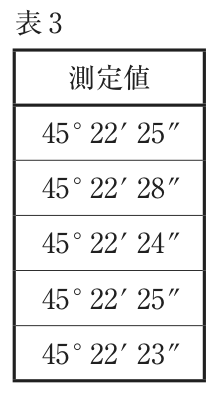
- ア=系統誤差／イ=偶然誤差／ウ=45°22′23″／エ=0.8″
- ア=系統誤差／イ=偶然誤差／ウ=45°22′25″／エ=0.8″
- ア=系統誤差／イ=偶然誤差／ウ=45°22′25″／エ=1.7″
- ア=偶然誤差／イ=系統誤差／ウ=45°22′23″／エ=1.7″
- ア=偶然誤差／イ=系統誤差／ウ=45°22′25″／エ=1.7″
答えと解説
答え 2
ア・イ 条件が同じなら大きさや現れ方が一定の誤差が系統誤差です。一定なので、測り方や計算で取り除けます。どうしても取り除けない、ばらばらに出る誤差が偶然誤差です。
ウ 同じ条件で測った値の最確値（いちばん確からしい値）は平均です。45°22′ までは共通なので、秒だけ平均します。
125 ÷ 5 ＝ 25 → 45°22′25″
エ 最確値の標準偏差は、残差（測定値 − 平均）を 2 乗して足し、n(n − 1) で割って √ を付けます。n は測った回数 5 です。
14 ÷ (5 × 4) ＝ 0.7
0.8² ＝ 0.64、0.9² ＝ 0.81 → √0.7 は 0.8 台 → 0.8″
No.7多角
図7は，トータルステーションによる偏心観測について示したものである。図7のように，既知点Bにおいて，既知点Aを基準方向として新点C方向の水平角を測定しようとしたところ，既知点Bから既知点Aへの視通が確保できなかったため，既知点Aに偏心点Pを設けて，水平角T′，偏心距離e及び偏心角Φの観測を行い，表7の結果を得た。このとき，既知点A方向と新点C方向の間の水平角Tは幾らか。最も近いものを次の中から選べ。
ただし，既知点A，B間の距離Sは，1,500 mであり，S及びeは基準面上の距離に補正されているものとする。
また，角度1ラジアンは，(2×10⁵)″とする。
なお，関数の値が必要な場合は，巻末の関数表を使用すること。
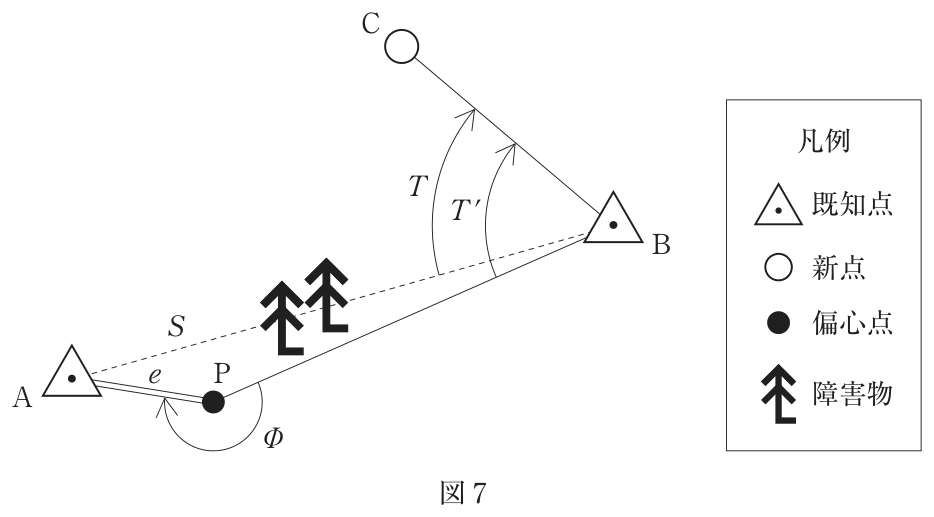
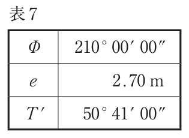
- 50°30′00″
- 50°32′00″
- 50°34′00″
- 50°36′00″
- 50°38′00″
答えと解説
答え 5
A が見えないので、A から少しはなれた P を見て角 T′ を測り、あとで A の向きとの差 x を直します（偏心補正）。偏心角 Φ は、P で B の向きから右回りに A の向きまで測った角です。
直線 BP を P の先へ延ばすと、A との角は 180° − 150° ＝ 30°
A から、その延長線までの長さは
B から 1,500 m 先で 1.35 m ずれて見えるので、角 x は（小さい角なので、長さ ÷ 距離 がそのままラジアン）
0.0009 × (2 × 10⁵)″ ＝ 180″ ＝ 3′
図では、A の向きのほうが P の向きより C に近いので、T は T′ より x だけ小さい角です。
No.9GNSS
GNSS測量機を用いた基準点測量において，基準点Aから基準点B，基準点Aから基準点Cまでの基線ベクトルを得た。表9は，地心直交座標系におけるX軸，Y軸，Z軸方向について，それぞれの基線ベクトル成分（ΔX，ΔY，ΔZ）を示したものである。基準点Bから基準点Cまでの基線ベクトルを求めたとき，基線ベクトル成分の組合せとして正しいものはどれか。次の中から選べ。
なお，関数の値が必要な場合は，巻末の関数表を使用すること。
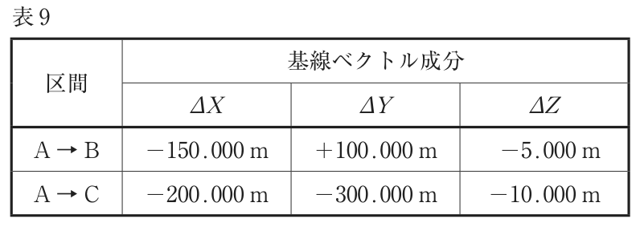
- ΔX=-50.000 m／ΔY=-400.000 m／ΔZ=-5.000 m
- ΔX=+50.000 m／ΔY=+400.000 m／ΔZ=+5.000 m
- ΔX=-350.000 m／ΔY=-200.000 m／ΔZ=-15.000 m
- ΔX=-50.000 m／ΔY=-400.000 m／ΔZ=-15.000 m
- ΔX=+350.000 m／ΔY=+200.000 m／ΔZ=+15.000 m
答えと解説
答え 1
基線ベクトルは「ある点から別の点まで、X・Y・Z 方向にどれだけ動くか」を表した数です。B→A は A→B の符号を全部逆にしたものなので、B→C ＝ (A→C) − (A→B) です。
ΔY ＝ −300 − 100 ＝ −400 m
ΔZ ＝ −10 − (−5) ＝ −5 m
No.12水準
図12に示すように，既知点A，B及びCから新点Pの標高を求めるために公共測量における2級水準測量を実施し，表12－1の結果を得た。新点Pの標高の最確値は幾らか。最も近いものを次の中から選べ。
ただし，既知点の標高は表12－2のとおりとする。
なお，関数の値が必要な場合は，巻末の関数表を使用すること。
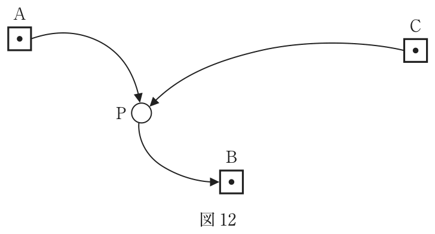
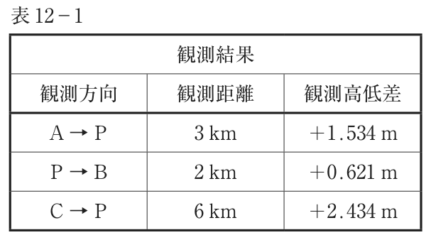
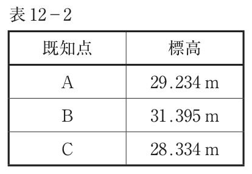
- 30.769 m
- 30.770 m
- 30.771 m
- 30.772 m
- 31.392 m
答えと解説
答え 3
3 つの既知点から、それぞれ P の標高を出します。高低差は「矢印の先が、矢印の元より何 m 高いか」です。P→B は P から B へ上がる量なので、B から P を出すときは引きます。
B から 31.395 − 0.621 ＝ 30.774 m
C から 28.334 ＋ 2.434 ＝ 30.768 m
水準測量は距離が短いほど正確なので、重さ（どれくらい信用するか）を距離に反比例させて平均します。
30.768 m より上の分だけ（mm で）平均すると、0、6、0 なので
最確値 ＝ 30.768 ＋ 0.003 ＝ 30.771 m
No.13水準
レベルの視準線を点検するために，図13のようにA及びBの位置で観測を行い，表13に示す結果を得た。この結果からレベルの視準線を調整するとき，Bの位置において標尺Ⅱの読定値を幾らに調整すればよいか。最も近いものを次の中から選べ。
なお，関数の値が必要な場合は，巻末の関数表を使用すること。
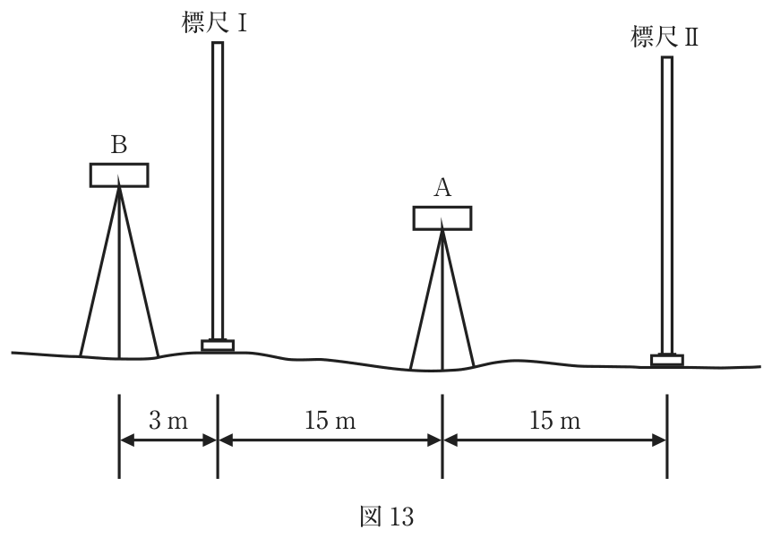
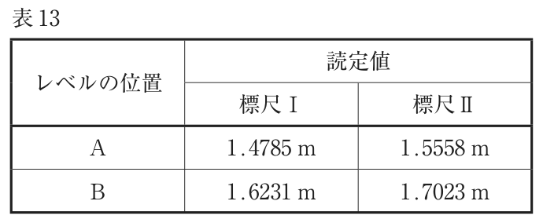
- 1.5579 m
- 1.6250 m
- 1.7002 m
- 1.7021 m
- 1.7044 m
答えと解説
答え 3
A は 2 本の標尺のちょうど中央なので、視準線が傾いていても 2 本とも同じだけ読みがずれ、差は正しい値になります。B では標尺までの距離がちがうので、差にずれが出ます。
B での差 標尺Ⅱ − 標尺Ⅰ ＝ 1.7023 − 1.6231 ＝ 0.0792 m
ずれ ＝ 0.0792 − 0.0773 ＝ 0.0019 m
この 0.0019 m は、B から標尺Ⅰ（3 m）と標尺Ⅱ（33 m）の距離の差 30 m で出たずれです。ずれは距離に比例するので、33 m 先の標尺Ⅱの読みのずれは
B では標尺Ⅱを大きく読みすぎているので、その分を引きます。
No.15地形
細部測量において，基準点Aにトータルステーションを整置し，点Bを観測したときに1′40″の水平方向の誤差があった場合，点Bの水平位置の誤差は幾らか。最も近いものを次の中から選べ。
ただし，点A，B間の水平距離は120 m，角度1ラジアンは(2×10⁵)″とする。
また，距離測定と角度測定は互いに影響を与えないものとし，角度測定以外の誤差は考えないものとする。
なお，関数の値が必要な場合は，巻末の関数表を使用すること。
- 24 mm
- 36 mm
- 48 mm
- 60 mm
- 72 mm
答えと解説
答え 4
1 ラジアンは、弧の長さが半径と同じになる角です。なので「半径 × 角（ラジアン）＝ 弧の長さ」で、小さな角なら弧の長さがそのまま B の位置のずれです。
100″ をラジアンに直す 100 ÷ (2 × 10⁵) ＝ 100 ÷ 200,000 ＝ 0.0005
No.17点群
公共測量における航空レーザ測量において，格子状の標高データである数値標高モデルを格子間隔1 mで作成する計画に基づき航空レーザ計測を行い，三次元計測データを作成した。図17は得られた三次元計測データの一部範囲の分布を示したものである。この範囲における欠測率は幾らか。最も近いものを次の中から選べ。
なお，関数の値が必要な場合は，巻末の関数表を使用すること。
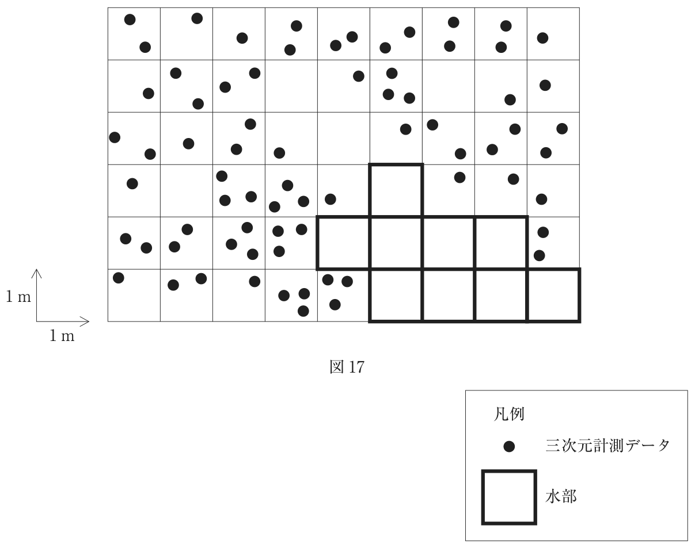
- 7%
- 9%
- 17%
- 24%
- 29%
答えと解説
答え 2
欠測は、1 つの格子の中に計測データの点が 1 つも無いことです。水部（川や海などの水面）は数えません。欠測率は、水部を除いた格子の数に対する、欠測の格子の数の割合です。
水部の格子 9 → 対象の格子 ＝ 54 − 9 ＝ 45
点の無い格子（水部を除く） 4
No.21地図
図21は，国土地理院刊行の電子地形図25000の一部（縮尺を変更，一部改変）である。この図にある税務署の経緯度で最も近いものを次のページの中から選べ。
ただし，表21に示す数値は，図の中にある裁判所，保健所の経緯度を表す。
なお，関数の値が必要な場合は，巻末の関数表を使用すること。
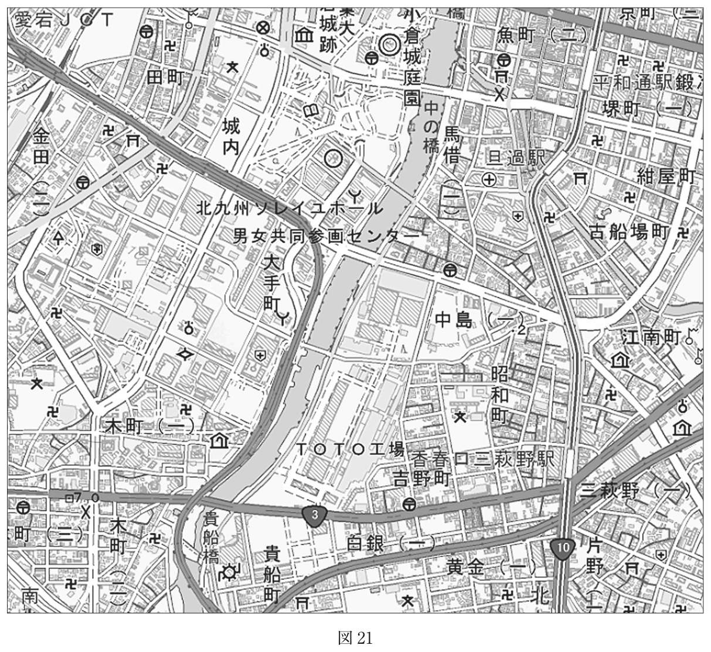
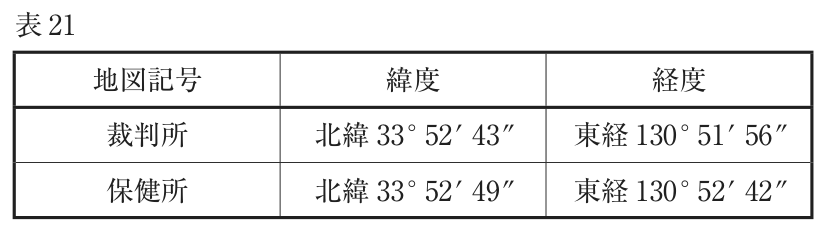
図の出典：国土地理院「電子地形図25000」（測量士補試験の問題に掲載されたもの）
- 北緯33°51′15″ 東経130°51′58″
- 北緯33°52′32″ 東経130°52′09″
- 北緯33°52′35″ 東経130°52′10″
- 北緯33°52′47″ 東経130°51′37″
- 北緯33°53′04″ 東経130°52′29″
答えと解説
答え 2
図 21 の中から 3 つの地図記号を探します。裁判所は立札の形、保健所は丸の中に十字、税務署はそろばんの玉の形です。図の右へ行くほど経度が大きく、下へ行くほど緯度が小さくなります。
裁判所と保健所の差を表 21 から出し、定規で測った長さの比で税務署の位置を割り出します。
緯度の差 52′49″ − 52′43″ ＝ 6″ （図の上で縦 12.4 mm）
税務署は、裁判所から東へ 27.6 mm、南へ 25.3 mm です。
緯度 6″ × 25.3 ÷ 12.4 ≒ 12.2″ → 52′43″ − 12.2″ ＝ 52′30.8″
最も近いのは、北緯 33°52′32″、東経 130°52′09″（選択肢 2）です。
図の出典：国土地理院「電子地形図25000」（測量士補試験の問題に掲載されたもの）。赤・青の線と文字は当サイトが書き足しました
No.25応用
図25に示すように，曲線半径R＝420 m，交角α＝90°で設置されている，点Oを中心とする円曲線から成る現在の道路（以下「現道路」という。）を改良し，点O′を中心とする円曲線から成る新しい道路（以下「新道路」という。）を建設することとなった。
新道路の交角β＝60°としたとき，新道路BC～EC′の路線長は幾らか。最も近いものを次の中から選べ。
ただし，新道路の起点BC及び交点IPの位置は，現道路と変わらないものとし，円周率π＝3.14とする。
なお，関数の値が必要な場合は，巻末の関数表を使用すること。
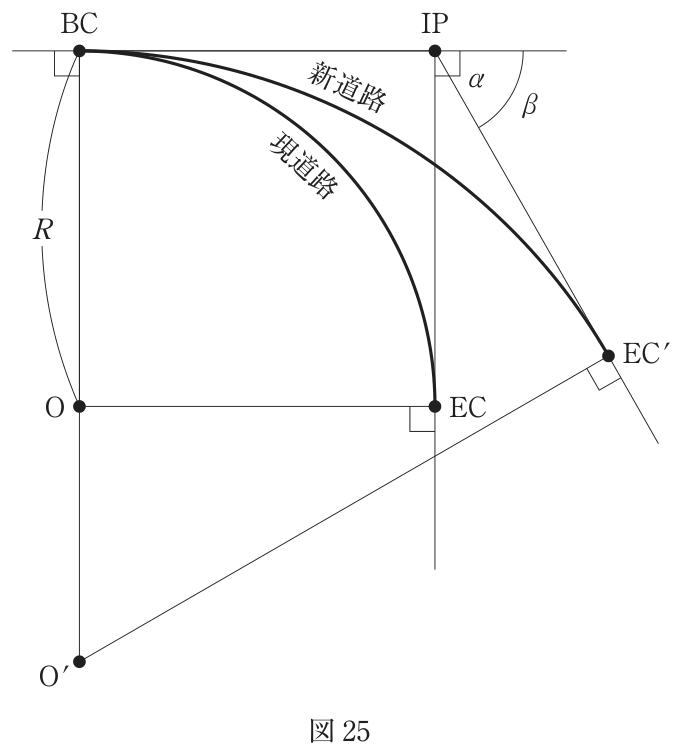
- 440 m
- 659 m
- 727 m
- 743 m
- 761 m
答えと解説
答え 5
まず BC と IP の間の長さ（接線長）を出します。現道路は交角 90° で、四角形 O・BC・IP・EC は 1 辺 R の正方形なので、BC と IP の間は半径と同じ 420 m。新道路でも BC と IP は動かないので、この 420 m は同じです。
次に新道路の半径 R′。中心角は交角と同じ 60° で、O′ と IP を結ぶ線がこれを半分に分けます。三角形 O′・BC・IP は、BC が直角、O′ の角が 30°、IP の角が 60° です。
路線長は、半径 R′ の円周の 60/360 です。
＝ 727.5 × 3.14 ÷ 3 ≒ 761 m
No.27応用
地点A，B，Cで囲まれた三角形ABCの土地の面積を算出するため，公共測量で設置された4級基準点から，トータルステーションを使用して測量を実施した。4級基準点から三角形の頂点にあたる地点A，B，Cを観測した結果は表27のとおりである。この土地の面積は幾らか。最も近いものを次の中から選べ。
なお，関数の値が必要な場合は，巻末の関数表を使用すること。
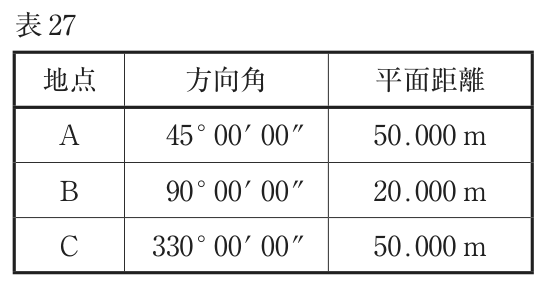
- 945 m²
- 1,006 m²
- 1,067 m²
- 1,128 m²
- 1,189 m²
答えと解説
答え 4
基準点を O とします。O と 2 点でできる三角形は、2 辺とその間の角が分かるので、面積 ＝ 1/2 × 辺 × 辺 × sin（間の角）で出せます。三角形 ABC は、この三角形の足し引きです。
∠AOB ＝ 90° − 45° ＝ 45°
∠COB ＝ 30° ＋ 90° ＝ 120°
sin 120° は表に無いので、sin 120° ＝ sin (180° − 120°) ＝ sin 60° を使います。
OAB ＝ 1/2 × 50 × 20 × sin 45° ＝ 500 × 0.70711 ≒ 353.6 m²
OCB ＝ 1/2 × 50 × 20 × sin 60° ＝ 500 × 0.86603 ≒ 433.0 m²